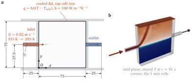
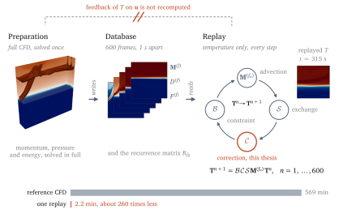
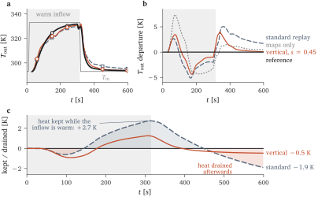
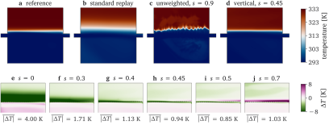
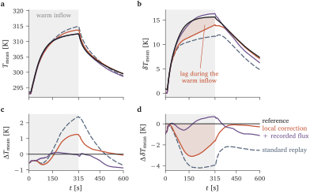
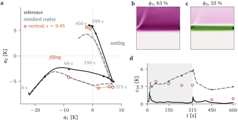

Record once, replay many times: data-based simulation of heat in a buoyant flow
In each time step the solver couples velocity and pressure again, even after the flow has settled into its pattern. The temperature it carries changes far more slowly.
The answer depends on whether the temperature changes the flow. That is what my thesis tests.


best heat error 1.07 K with no mixing; best layer height near fsd = 0.5
from the energy balance: 4.6 K of mean temperature leaves after the inflow
recorded maps alone keep the front 2.5 mm; the exchange makes it 19.3 mm

The strength was chosen against the reference. Choosing it without one is the next step.


What remains is missing transport, and a recording only serves the flow regime it was made in.
Replace the hand-set exchange strength by a closure learned from recorded data, checked against the reference.
Select or blend recordings by the state of the flow, since one recording serves one regime.
Conservation, boundedness and the energy budget as tests that any fast surrogate must pass.
A hint of low-dimensional structure: in the reference, two POD modes hold 96 % of the mid-plane variance (thesis Fig 5.11).

Next question: can the replay choose its own correction strength?